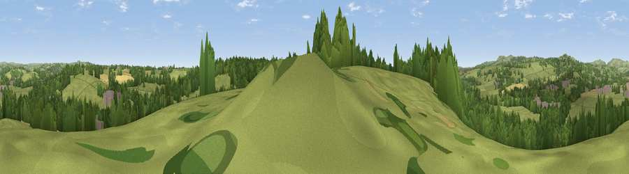

Viewpoint near Clifton
#32947 in England · top 57% of its area beats it · near CliftonWhere it is
The exact computed spot (SK 16425 44275). Click the marker for map links.
The view, rendered

A 360° render of this exact spot computed from the terrain model, tree cover and land cover — summer colours, afternoon light, calibrated against photographs of famous viewpoints. Real trees, hedges and buildings will differ in detail.
The panorama
Grey silhouette: terrain skyline in each direction (720 bearings, Earth curvature and refraction included). Dashed green: skyline with trees (+15 m) and buildings (+8 m) as obstacles. Blue strip: how far the ground is visible on each bearing.
Where the view opens
Wedge length = distance to the farthest visible ground on that bearing (vegetation-aware). Rings at 10, 25 and 50 km.
What fills the view
59% grassland · 32% woodland · 4% cropland · 4% built-up
Angular shares of the visible panorama (visual magnitude), not map area. Landscape diversity 0.41 (0–1 Shannon).
Key numbers
More beautiful places nearby
The staircase of upgrades: each row has a higher view potential than everything closer. Driving times are estimates from straight-line distance, calibrated against real road routing — check an actual route before setting out.
| Place | Direction | Drive | Score |
|---|---|---|---|
| Viewpoint near Upper Mayfield | NNW · 2 km | ~5 min | 37.5 |
| Viewpoint near Stanton | W · 3 km | ~8 min | 38.4 |
| Viewpoint near Shirley | ESE · 5 km | ~11 min | 55.6 |
| Viewpoint near Wootton | WNW · 6 km | ~13 min | 66.1 |
| Viewpoint near Wootton | WNW · 7 km | ~14 min | 74.4 |
| Viewpoint near Wootton | WNW · 7 km | ~15 min | 74.8 |
| Tissington Hill | N · 8 km | ~17 min | 75.5 |
| Viewpoint near Mow Cop | WNW · 33 km | ~51 min | 78.9 |
52.99555, -1.75673 · source: screening · position refined by local search. Computed location — check access rights before visiting.